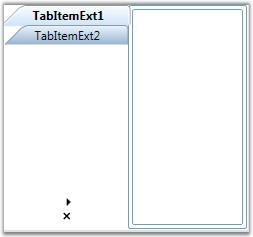

To improve the user readability, the Tab Strip text can be rotated, whenever the TabStripPlacement is set to left or right. The RotateTextWhenVertical property need to be set to true, to enable this feature. When this property is set to true, and when the TabStripPlacement is changed to left or right (in other words, when the tab strip is in the vertical position), the text will be rotated and placed horizontally as in the below image.
Here is the code snippet for rotating the text when tab strip is vertically placed.
|
[XAML]
<!-- Adding TabControlExt with TabStripPlacement is left and RotateTextWhenVertical is true --> <syncfusion:TabControlExt Margin="20" Name="tabControlExt" TabStripPlacement="Left" RotateTextWhenVertical="true">
<!-- Adding TabItemExt --> <syncfusion:TabItemExt Name="tabItemExt1" Header="TabItemExt1"/>
<!-- Adding TabItemExt --> <syncfusion:TabItemExt Name="tabItemExt2" Header="TabItemExt2"/> </syncfusion:TabControlExt> |
|
[C#]
// Creating instance of the TabControlExt control TabControlExt tabControlExt = new TabControlExt();
//Creating the instance of StackPanel StackPanel stackPanel = new StackPanel();
//Creating instance of the TabItemExt TabItemExt tabItemExt1 = new TabItemExt();
// Setting header of the TabItemExt tabItemExt1.Header = "TabItemExt1";
//Adding TabItemExt to TabControlExt tabControlExt.Items.Add(tabItemExt1);
//Creating instance of the TabItemExt2 TabItemExt tabItemExt2 = new TabItemExt();
// Setting header of the TabItemExt tabItemExt2.Header = "TabItemExt2";
//Adding TabItemExt to TabControlExt tabControlExt.Items.Add(tabItemExt2);
//Setting TabStripPlacement property as Left tabControlExt.TabStripPlacement = Dock.Left;
//Setting RotateTextWhenVertical property as true tabControlExt.RotateTextWhenVertical = true;
//Adding control to the StackPanel stackPanel.Children.Add(tabControlExt); |

Figure 1002: TabStripPlacement = "Left" and RotateTextWhenVertical = "True"